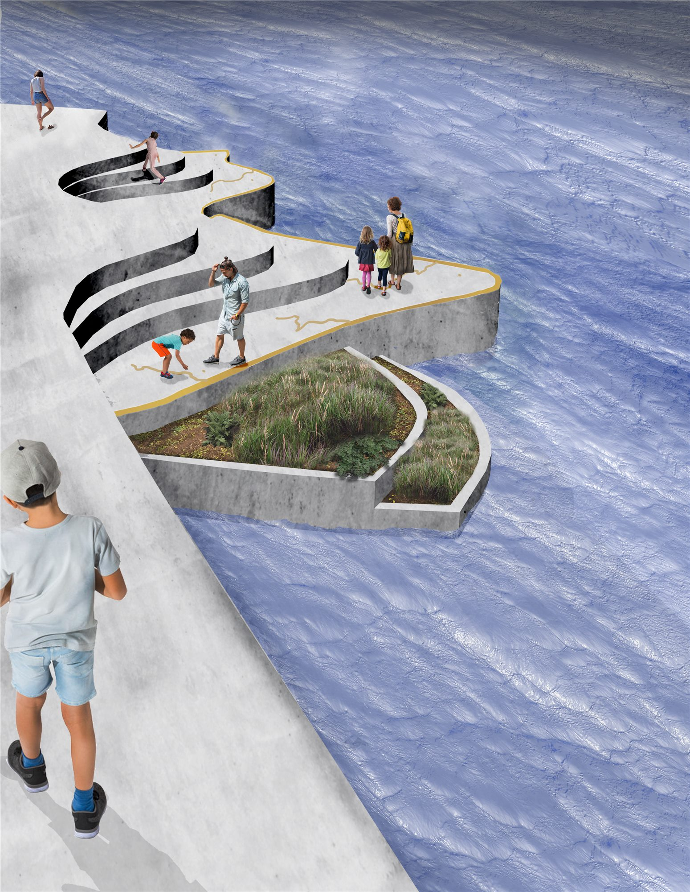
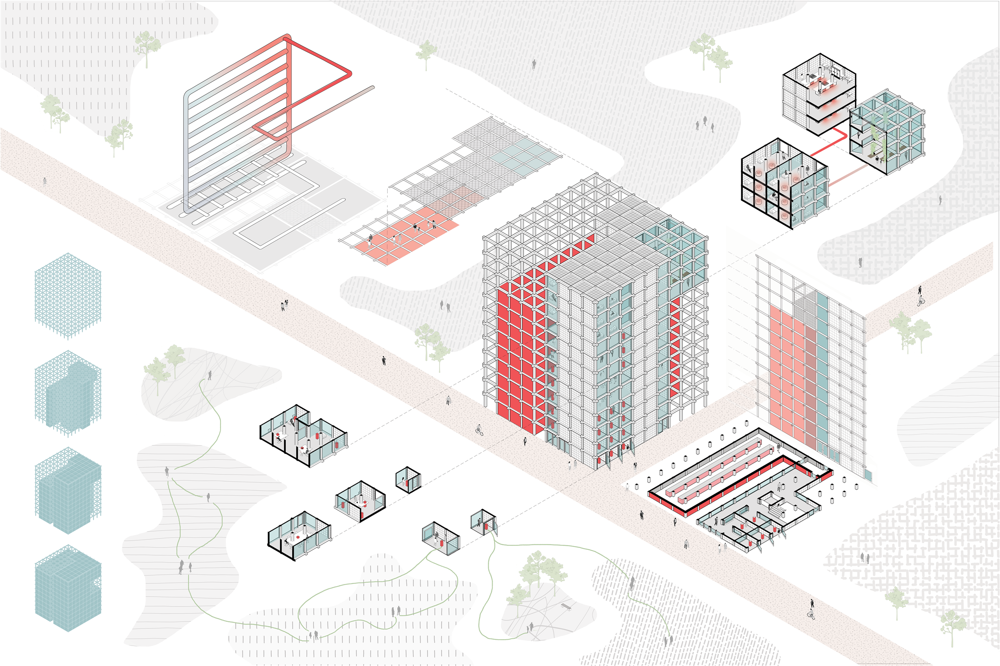

Community
Housing and shared spaces that cultivate connection, wellbeing, and intergenerational support.
CU Boulder Architecture Portfolio
Architecture student at CU Boulder exploring spaces shaped by community, ecology, and future-facing urban life.
Practice Focus
Housing and shared spaces that cultivate connection, wellbeing, and intergenerational support.
Spatial systems that reveal environmental relationships and invite stewardship through experience.
Forward-looking proposals that explore how architecture mediates civic life, technology, and public access.
Selected Work

Housing / Community
Affordable co-housing for families and seniors, layering community space, private space, and connected clusters of units within a compact urban site.

Landscape / Education
An interactive river-edge intervention in downtown Denver that reveals watershed relationships while collecting and filtering runoff water.

Speculation / Civic Tech
A speculative reimagining of data centers as local community hubs built from adaptable nodes that mediate new forms of interaction between people and AI.